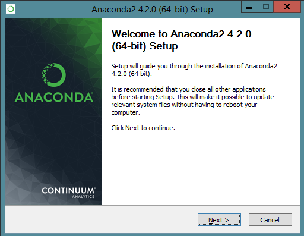
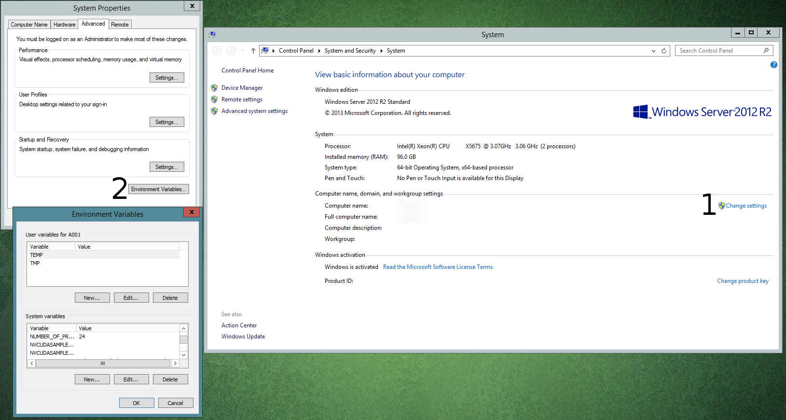
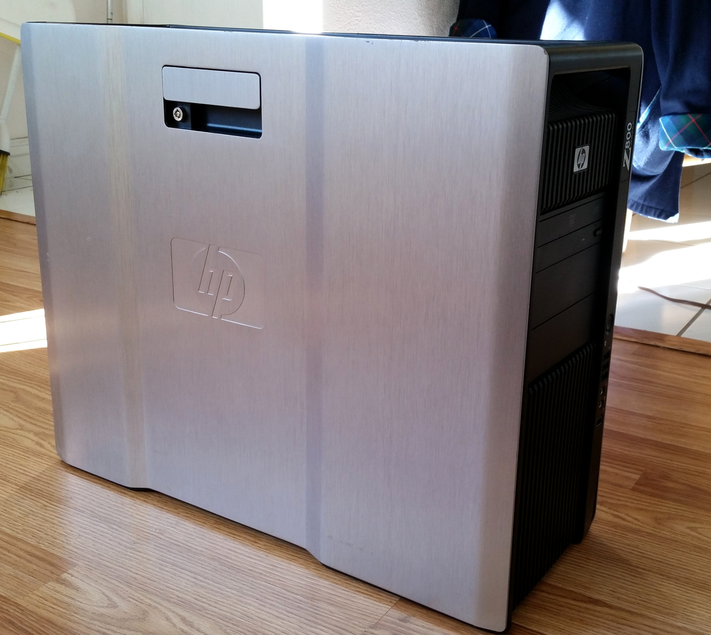
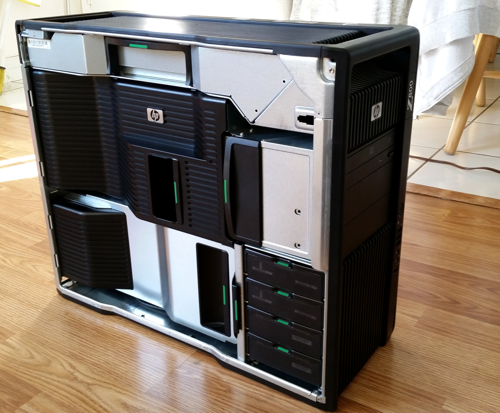
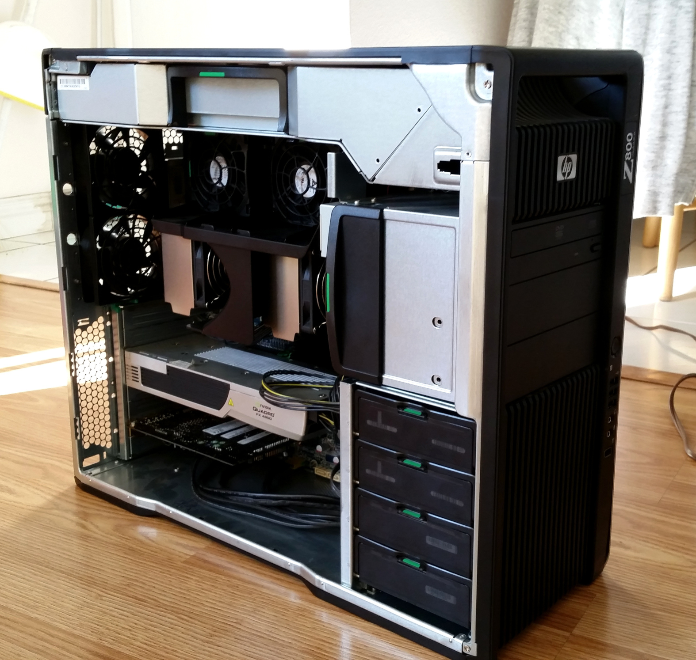
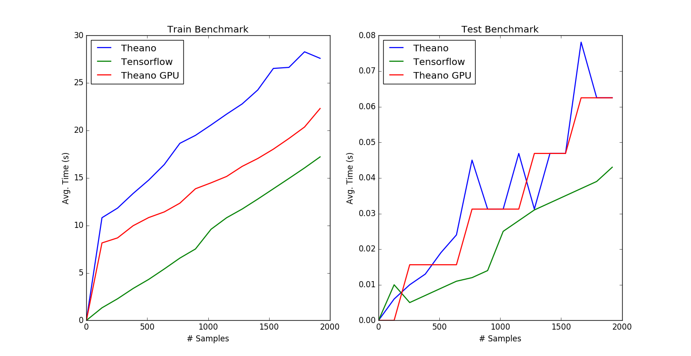

Figure 1: Anaconda Python Installer

Figure 2: Setting System Environment Variables in Windows
#Create an MLP: A sequence of fully-connected layers with an activation
#function AF applied at all layers except the last.
#X: The input tensor
#W: A list of weight tensors for layers of the MLP
#B: A list of bias tensors for the layers of the MLP
#AF: The activation function to be used at hidden layers
#Ret: The network output
def CreateMLP(X, W, B, AF):
n = len(W)
for i in range(n - 1):
X = AF(X.dot(W[i]) + B[i])
return X.dot(W[n - 1]) + B[n - 1]
#Creates weight and bias matrices for an MLP network
#given a list of the layer sizes.
#L: A list of the layer sizes
#Ret: The lists of weight and bias matrices (W, B)
def CreateMLPWeights(L):
W, B = [], []
n = len(L)
for i in range(n - 1):
#Use Xavier initialization for weights
xv = np.sqrt(6. / (L[i] + L[i + 1]))
W.append(theano.shared(np.random.uniform(-xv, xv, [L[i], L[i + 1]])))
#Initialize bias to 0
B.append(theano.shared(np.zeros([L[i + 1]])))
return (W, B)
#Given a string of the activation function name, return the
#corresponding Theano function.
#Ret: The Theano activation function handle
def GetActivationFunction(name):
if name == 'tanh':
return T.tanh
elif name == 'sig':
return T.nnet.sigmoid
elif name == 'fsig':
return T.nnet.ultra_fast_sigmoid
elif name == 'relu':
return T.nnet.relu
elif name == 'softmax':
return T.nnet.softmax
class TheanoMLPR:
def __init__(self, layers, actfn = 'tanh', batchSize = None, learnRate = 1e-3, maxIter = 1000, tol = 5e-2, verbose = True):
self.AF = GetActivationFunction(actfn)
#Batch size
self.bs = batchSize
self.L = layers
self.lr = learnRate
#Error tolerance for early stopping criteron
self.tol = tol
#Toggles verbose output
self.verbose = verbose
#Maximum number of iterations to run
self.nIter = maxIter
#List of weight matrices
self.W = []
#List of bias matrices
self.B = []
#Input matrix
self.X = T.matrix()
#Output matrix
self.Y = T.matrix()
#Weight and bias matrices
self.W, self.B = CreateMLPWeights(layers)
#The result of a forward pass of the network
self.YH = CreateMLP(self.X, self.W, self.B, self.AF)
#Use L2 loss for network
self.loss = ((self.YH - self.Y) ** 2).mean()
#Function for performing a forward pass
self.ffp = theano.function([self.X], self.YH)
#For computing the loss
self.fcl = theano.function([self.X, self.Y], self.loss)
#Gradients for weight matrices
self.DW = [T.grad(self.loss, Wi) for Wi in self.W]
#Gradients for bias
self.DB = [T.grad(self.loss, Bi) for Bi in self.B]
#Weight update terms
WU = [(self.W[i], self.W[i] - self.lr * self.DW[i]) for i in range(len(self.DW))]
BU = [(self.B[i], self.B[i] - self.lr * self.DB[i]) for i in range(len(self.DB))]
#Gradient step
self.fgs = theano.function([self.X, self.Y], updates = tuple(WU + BU))#Initializes the weight and bias matrices of the network
def Initialize(self):
n = len(self.L)
for i in range(n - 1):
#Use Xavier initialization for weights
xv = np.sqrt(6. / (self.L[i] + self.L[i + 1]))
self.W[i].set_value(np.random.uniform(-xv, xv, [self.L[i], self.L[i + 1]]))
#Initialize bias to 0
self.B[i].set_value(np.zeros([self.L[i + 1]]))
#Fit the MLP to the data
#A: numpy matrix where each row is a sample
#Y: numpy matrix of target values
def fit(self, A, Y):
self.Initialize()
m = len(A)
for i in range(self.nIter):
if self.bs is None: #Use all samples
self.fgs(A, Y) #Perform the gradient step
else: #Train m samples using random batches of size self.bs
for _ in range(0, m, self.bs):
#Choose a random batch of samples
bi = np.random.randint(m, size = self.bs)
self.fgs(A[bi], Y[bi]) #Perform the gradient step on the batch
if i % 10 == 9:
loss = self.score(A, Y)
if self.verbose:
print('Iter {:7d}: {:8f}'.format(1 + i, loss))
if loss < self.tol:
break
#Predict the output given the input (only run after calling fit)
#A: The input values for which to predict outputs
#Ret: The predicted output values (one row per input sample)
def predict(self, A):
return self.ffp(A)
#Predicts the ouputs for input A and then computes the loss term
#between the predicted and actual outputs
#A: The input values for which to predict outputs
#Y: The actual target values
#Ret: The network loss term
def score(self, A, Y):
return np.float64(self.fcl(A, Y))#Generate data with nf features and ns samples. If new data
#is generated, write it to file so it can be reused across all benchmarks
def GenerateData(nf = 256, ns = 16384):
try: #Try to read data from file
A = np.loadtxt('bdatA.csv', delimiter = ',')
Y = np.loadtxt('bdatY.csv', delimiter = ',').reshape(-1, 1)
except OSError: #New data needs to be generated
x = np.linspace(-1, 1, num = ns).reshape(-1, 1)
A = np.concatenate([x] * nf, axis = 1)
Y = ((np.sum(A, axis = 1) / nf) ** 2).reshape(-1, 1)
A = (A + np.random.rand(ns, nf)) / (2.0)
np.savetxt('bdatA.csv', A, delimiter = ',')
np.savetxt('bdatY.csv', Y, delimiter = ',')
return (A, Y)#R: Regressor network to use
#A: The sample data matrix
#Y: Target data matrix
#nt: Number of times to divide the sample matrix
#fn: File name to write results
def MakeBenchDataFeature(R, A, Y, nt, fn):
#Divide samples into nt peices on for each i run benchmark with chunks 0, 1, ..., i
step = A.shape[1] // nt
TT = np.zeros((nt, 3))
for i in range(1, nt):
#Number of features
TT[i, 0] = len(range(0, (i * step)))
print('{:8d} feature benchmark.'.format(int(TT[i, 0])))
#Training and testing times respectively
TT[i, 1], TT[i, 2] = RunBenchmark(R, A[:, 0:(i * step)], Y[:, 0:(i * step)])
#Save benchmark data to csv file
np.savetxt(fn, TT, delimiter = ',', header = 'Samples,Train,Test')
#Plots benchmark data on a given matplotlib axes object
#X: X-axis data
#Y: Y-axis data
#ax: The axes object
#name: Name of plot for title
#lab: Label of the data for the legend
def PlotBenchmark(X, Y, ax, xlab, name, lab):
ax.set_xlabel(xlab)
ax.set_ylabel('Avg. Time (s)')
ax.set_title(name + ' Benchmark')
ax.plot(X, Y, linewidth = 1.618, label = lab)
ax.legend(loc = 'upper left')
#Runs a benchmark on a MLPR model
#R: Regressor network to use
#A: The sample data matrix
#Y: Target data matrix
def RunBenchmark(R, A, Y):
#Record training times
t0 = time.time()
R.fit(A, Y)
t1 = time.time()
trnt = t1 - t0
#Record testing time
t0 = time.time()
YH = R.predict(A)
t1 = time.time()
tstt = t1 - t0
return (trnt, tstt)def Main():
if len(sys.argv) <= 1:
return
A, Y = GenerateData(ns = 2048)
#Create layer sizes; make 6 layers of nf neurons followed by a single output neuron
L = [A.shape[1]] * 6 + [1]
print('Layer Sizes: ' + str(L))
if sys.argv[1] == 'theano':
print('Running theano benchmark.')
from TheanoANN import TheanoMLPR
#Create the Theano MLP
tmlp = TheanoMLPR(L, batchSize = 128, learnRate = 1e-5, maxIter = 100, tol = 1e-3, verbose = True)
MakeBenchDataSample(tmlp, A, Y, 16, 'TheanoSampDat.csv')
print('Done. Data written to TheanoSampDat.csv.')
if sys.argv[1] == 'theanogpu':
print('Running theano GPU benchmark.')
#Set optional flags for the GPU
#Environment flags need to be set before importing theano
os.environ["THEANO_FLAGS"] = "device=gpu"
from TheanoANN import TheanoMLPR
#Create the Theano MLP
tmlp = TheanoMLPR(L, batchSize = 128, learnRate = 1e-5, maxIter = 100, tol = 1e-3, verbose = True)
MakeBenchDataSample(tmlp, A, Y, 16, 'TheanoGPUSampDat.csv')
print('Done. Data written to TheanoGPUSampDat.csv.')
if sys.argv[1] == 'tensorflow':
print('Running tensorflow benchmark.')
from TFANN import MLPR
#Create the Tensorflow model
mlpr = MLPR(L, batchSize = 128, learnRate = 1e-5, maxIter = 100, tol = 1e-3, verbose = True)
MakeBenchDataSample(mlpr, A, Y, 16, 'TfSampDat.csv')
print('Done. Data written to TfSampDat.csv.')
if sys.argv[1] == 'plot':
print('Displaying results.')
try:
T1 = np.loadtxt('TheanoSampDat.csv', delimiter = ',', skiprows = 1)
except OSError:
T1 = None
try:
T2 = np.loadtxt('TfSampDat.csv', delimiter = ',', skiprows = 1)
except OSError:
T2 = None
try:
T3 = np.loadtxt('TheanoGPUSampDat.csv', delimiter = ',', skiprows = 1)
except OSError:
T3 = None
fig, ax = mpl.subplots(1, 2)
if T1 is not None:
PlotBenchmark(T1[:, 0], T1[:, 1], ax[0], '# Samples', 'Train', 'Theano')
PlotBenchmark(T1[:, 0], T1[:, 2], ax[1], '# Samples', 'Test', 'Theano')
if T2 is not None:
PlotBenchmark(T2[:, 0], T2[:, 1], ax[0], '# Samples', 'Train', 'Tensorflow')
PlotBenchmark(T2[:, 0], T2[:, 2], ax[1], '# Samples', 'Test', 'Tensorflow')
if T3 is not None:
PlotBenchmark(T3[:, 0], T3[:, 1], ax[0], '# Samples', 'Train', 'Theano GPU')
PlotBenchmark(T3[:, 0], T3[:, 2], ax[1], '# Samples', 'Test', 'Theano GPU')
mpl.show()|  | |
|  |  |
Figure 3: The Benchmark Rig
python Main.py theano
python Main.py theanogpu
python Main.py tensorflow
python Main.py plot
Figure 4: TensorFlow vs. Theano Benchmark Results
{kind=link}
{kind=link}
{kind=link}
{kind=link}